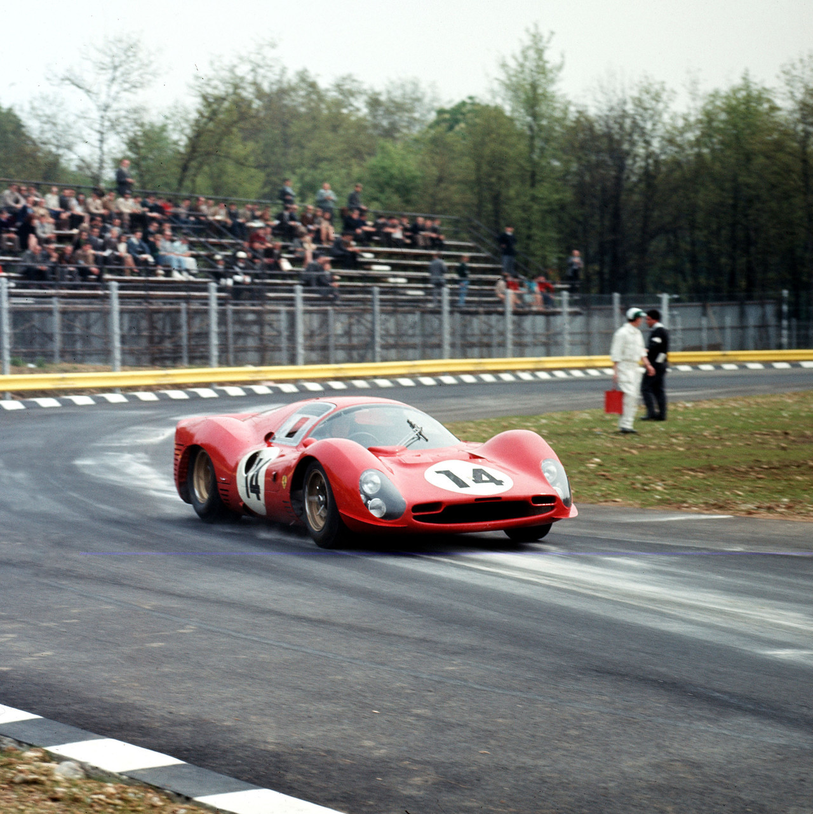

1966 Ferrari 330 P3
The 1966 Ferrari 330 P3 is an Italian supercar, a legend in the motorsports community.
There are no longer any Ferrari P3s extant as the original P3 0846 was converted to a P3/P4 and definitively written off and scrapped by Ferrari due to previous accident damage and fire damage it sustained at Le Mans 1967, and P3s 0844 and 0848 were converted to P3/412 Ps by Ferrari. At a later point P3/412P 0844 was converted by Ferrari to a 330 Can-Am and in the 1990s returned to P3/412P configuration in private ownership. In order to be able to accept the challenge posed by the competition from the Ford GT40, the P2 was consistently further developed. Since increasing displacement was not part of Ferrari's philosophy - some Ford GT40s had 7-liter V8 engines - better performance could only be achieved through reduced weight and improved aerodynamics. Three new bodies were therefore created in the workshop of Piero Drogo, who also gave the customer 365P2 a new shape
Sleeker than ever, the P3 featured fiberglass doors. It was the first time the Maranello based team favored the lightweight material over the aluminum used on the previous prototypes. The clutch was relocated from right behind the gearbox to between the gearbox and engine. The gearbox was a new ZF five-speed unit. Lovely looking, but now getting outdated, the six Weber Carburetors found on the 330 P2 were replaced by a Lucas Fuel Injection system on the P3's engine. The engine provided slightly more power, but the wider track added some weight, giving the P3 a similar power-to-weight ratio as the P2. Three P3s were constructed.
In the movie, Ford Vs Ferrari (2019), this car was shown as Enzo Ferrari's sleek-space ship looking machine which could absolutely annihilate opposition, as shown in the movie, this car was hand-built by the top engineers in Modena. This car was driven by Mike Parkes and Ludovico Scarfiotti, the number 20 car for Ferrari in the 24 hours of Le Mans 1966.

The highlight of the 1967 season came at the 24 Hours of Daytona, a race that would come to be known as The Revenge of Il Commendatore. Led by Chris Amon and Lorenzo Bandini in a 330 P4 (and trailed by Mike Parkes and Ludovico Scarfiotti in another 330 P4), Ferrari finished 1-2-3 at the hallowed Florida circuit. Soon thereafter, a pair of P4s finished 1-2 at Monza, and while Ford again won at Le Mans, P4s finished second and third and Ferrari was once again in possession of the sports prototype title.
↑BACK TO TOP↑